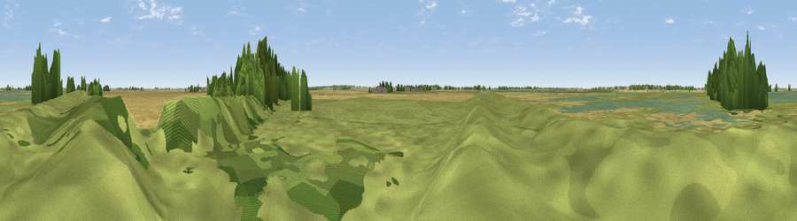

Viewpoint near Pymoor
#46101 in England · top 98% of its area beats it · near PymoorWhere it is
The exact computed spot (TL 50218 88484). Click the marker for map links.
The view, rendered

A 360° render of this exact spot computed from the terrain model, tree cover and land cover — summer colours, afternoon light, calibrated against photographs of famous viewpoints. Real trees, hedges and buildings will differ in detail.
The panorama
Grey silhouette: terrain skyline in each direction (720 bearings, Earth curvature and refraction included). Dashed green: skyline with trees (+15 m) and buildings (+8 m) as obstacles. Blue strip: how far the ground is visible on each bearing.
Where the view opens
Wedge length = distance to the farthest visible ground on that bearing (vegetation-aware). Rings at 10, 25 and 50 km.
What fills the view
87% grassland · 10% cropland · 2% woodland
Angular shares of the visible panorama (visual magnitude), not map area. Landscape diversity 0.20 (0–1 Shannon).
Key numbers
More beautiful places nearby
The staircase of upgrades: each row has a higher view potential than everything closer. Driving times are estimates from straight-line distance, calibrated against real road routing — check an actual route before setting out.
| Place | Direction | Drive | Score |
|---|---|---|---|
| Viewpoint near Little Downham | SSE · 6 km | ~12 min | 21.5 |
| Mill Mound | SSE · 9 km | ~18 min | 30.9 |
| Haddenham village | SSW · 14 km | ~25 min | 34.6 |
| Viewpoint near Middleton | NE · 32 km | ~49 min | 56.5 |
| Viewpoint near Royston | SSW · 51 km | ~72 min | 56.6 |
| Viewpoint near Hexton | SW · 70 km | ~93 min | 65.4 |
| Viewpoint near East Keal | N · 77 km | ~101 min | 66.0 |
| Viewpoint near Weybourne | NE · 81 km | ~105 min | 68.3 |
52.47362, 0.21022 · source: osm viewpoint · position refined by local search. Computed location — check access rights before visiting.